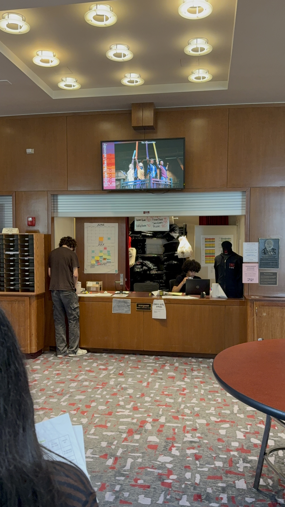
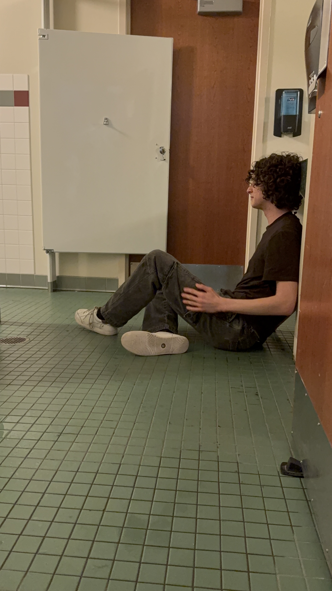
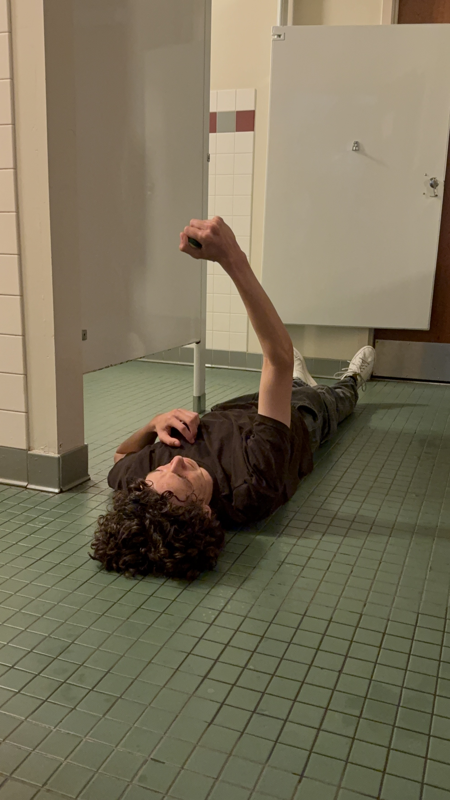
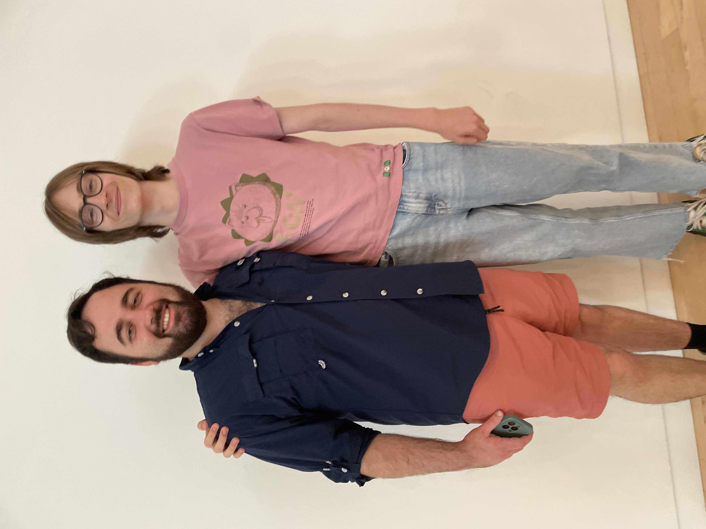
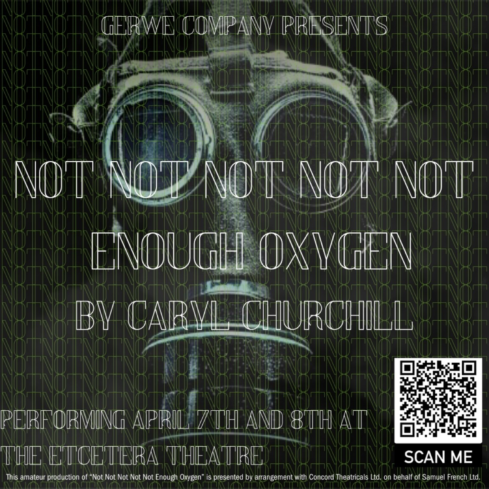

Directing
CMU Drama Precollege Directing ProjectDirector · 2025
Over the Summer of 2025, I was lucky enough to participate in the prestigious Carnegie Mellon's PreCollege Drama Intensive. During the camp, I took Carlos Martinez (MFA John Wells Directing Fellow)'s directing class. The class was so valuable and taught me so much about what exactly it means to be a director. Working under his mentorship along with all the other students was a blessing beyond naming. For our final project, we wrote and directed a scene related to a specific scene from Caryl Churchill's Love and Information. I'm really proud of what I and everyone else in the group accomplished. Thank you Carlos!
Here are some images from the final showing!




Not Not Not Not Not Enough Oxygen by Caryl ChurchillDirector and Mick · 2025
I produced, directed, and acted in a production of Caryl Churchill's Not Not Not Not Not Enough Oxygen at the Etcetera Theatre in Camden. This was the play that got me into directing, which also meant that I was coming in blind. I jumped in headfirst anyways! We performed twice at the Etcetera Theatre in Camden. When I read the play, I knew that I had to put this piece on the stage. Caryl Churchill's genius is beyond measure and is especially visible in this crazy, dystopian, absurdist, yet deeply truthful script. Despite all the challenges that came with learning the process, it was more fun than I could have ever imagined.
Here's the poster I made:


Lunch (Short Film) Co-Director · 2026
I had the honor and joy of being a co-director for the short film Lunch. This was my first every film directing gig, and I'm so lucky to have had my other co-director to help me along the way. Learning from them was an utter joy, and a huge step into a medium that at the time was outside of my comfort zone. We premiered along with several other short films at the Everyman Maida Vale in London. Seeing the 14 minutes I had spent the past year working on with my co-director right there on a giant screen for the first time was addicting to say the least.
NOTE: a good SHOW hides all its wires, unless it doesn't.